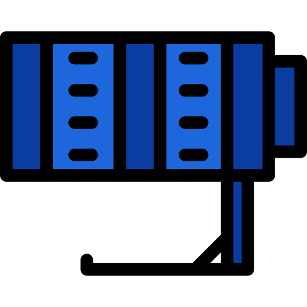

Perception/Vision
Systems that transform raw sensory data into structured world understanding. The work explores semantic mapping, visual-language grounding, and perception pipelines for autonomous robotics.
The perception layer enables robots to interpret the environment by transforming sensor inputs into semantic representations. These works explore mapping pipelines, visual-language embeddings, and spatial mechanisms that help robots reason about objects, environments, and goals.
Perception Systems Archive
Click any panel to open the GitHub repository.

Reflectivity-Augmented LiDAR Scene Understanding for Robotic Perception
Reflect-Aug-Seg is a LiDAR perception research framework that investigates whether reflectivity-style augmentation of raw intensity can improve semantic scene understanding for robotic perception systems. The project is built around the observation that raw LiDAR intensity is not a pure surface descriptor, but is entangled with geometric effects such as sensor range and measurement conditions. To study this in a disciplined and interpretable way, the framework introduces a lightweight pseudo-reflectivity signal derived from intensity and point-wise range, and evaluates how that transformed cue behaves across single-frame analysis, short-horizon motion windows, and semantic class structure. Rather than claiming full physical reflectivity recovery, the system treats reflectivity-aware reasoning as a practical perception problem and examines whether the augmented signal reveals clearer structure than intensity alone. The project combines SemanticKITTI-based analysis, class-wise signal interpretation, temporal consistency studies, and visualization-driven evaluation to assess whether this additional cue remains stable and semantically meaningful through motion. The result is a modular perception study that explores how reflectivity-inspired signal augmentation can support more robust LiDAR scene understanding in autonomous robotic systems.
(UNDER CONSTRUCTION)VLMaps Reimplementation
VLMaps Reimplementation is a semantic mapping framework that bridges geometric robot mapping with open-vocabulary visual–language understanding to enable language-conditioned navigation in previously unseen environments. The system reconstructs persistent top-down semantic maps from RGB-D observations by projecting visual embeddings from models such as CLIP and LSeg into a spatial representation aligned with the robot’s geometric map. This fusion allows natural language queries to be grounded directly in the environment, enabling robots to interpret commands like locating objects or navigating to semantically defined regions without requiring predefined class labels. Designed as a transparent and reproducible implementation of the Visual Language Maps paradigm, the framework exposes the full pipeline of embedding extraction, 3D back-projection, semantic map construction, and query-based navigation. By combining open-vocabulary perception with spatial memory, the system demonstrates how modern vision-language models can extend robotic autonomy beyond fixed taxonomies toward flexible human-robot interaction. The result is a modular research platform for exploring language-driven navigation, semantic scene understanding, and scalable robot perception in real-world environments.
Open Repository
Label-Conditioned Robot Vision
Label-Conditioned Robot Vision is a generative perception framework that explores how semantic labels can act as controllable priors for visual scene synthesis in robotic perception systems. Built around conditional Generative Adversarial Networks (cGANs), the system learns to generate images conditioned on symbolic labels, enabling structured control over visual content while preserving the statistical properties of real-world datasets. The framework progressively evaluates this capability across increasing visual complexity, from simple handwritten digits to fine-grained natural categories such as flowers and birds, exposing how conditional generation scales with semantic richness. Beyond image synthesis itself, the project investigates controllability, training stability, and dataset-driven failure modes that emerge when generative models are guided by semantic constraints. By framing label conditioning as a perception primitive rather than a purely artistic generator, the system demonstrates how generative models can support robotics tasks such as synthetic dataset augmentation, semantic grounding, and perception robustness testing. The result is a modular experimental platform for studying controllable visual generation and its role in next-generation robot perception pipelines. This capability enables creation of semantically structured visual data, helping accelerate the development and evaluation of perception algorithms in data-constrained robotic environments.
Open Repository